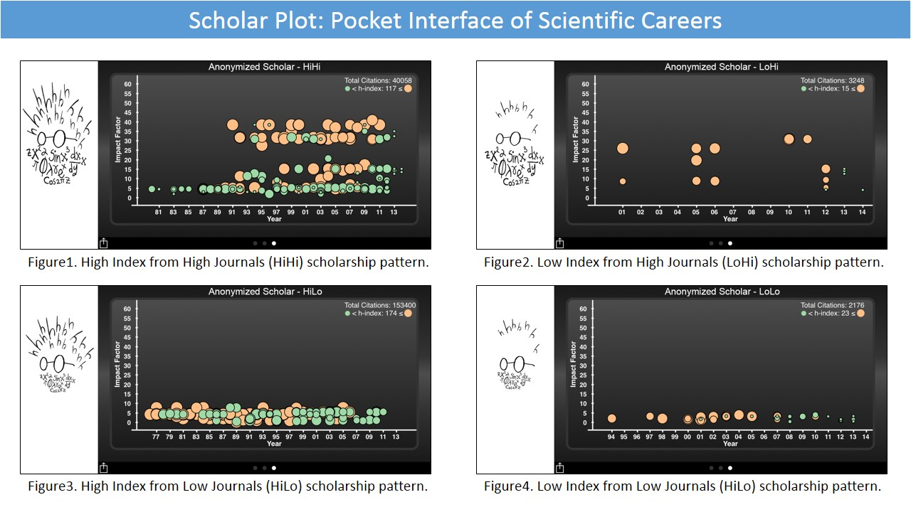
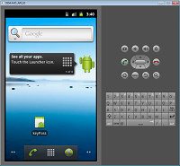
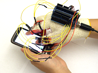
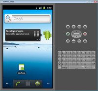
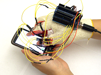
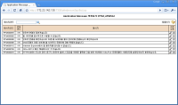
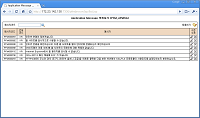
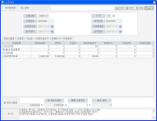
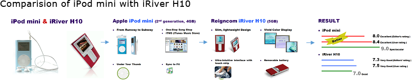
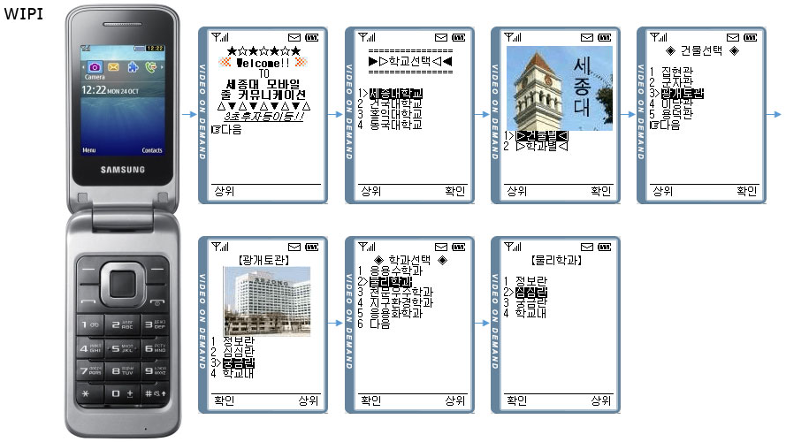

Hello! 안녕! (annyeong!) |
| Karl Wearing Google Glass 2013 |
About Me
-
My name is (Karl) Kyeongan Kwon. I was born in Seoul, Korea, where grew up and studied a bachelor degree in computer science and live in Houston, TX, where study and research thesis and dissertation topics for a PhD degree. A former software engineer at the TmaxSoft, I have researched and developed enterprise software with the top companies like Samsung, IBM and HP. Now I am a member of the Computational Physiology Lab. (CPL) at the University of Houston since Jan 2013. I have been working under Prof. Ioannis Pavlidis on Human-computer Interaction and data visualization. Priory to that, I used to work the i2C Lab under Prof. Larry Weidong Shi working on Mobile HCI and mobile security projects.
Here are my curriculum vitae: Short version, Long version
Contact Me
Phone +1 (832) 800 8977
Email: kyeongan@cs.uh.edu
Skype: newmkka
Blog (English): http://cosckarl.wordpress.com/
Blog (Korean): http://newmkka.tistory.com/
Publications
Papers in Progress
-
Dinesh Majeti,
Kyeong-An Kwon , and Ioannis Pavlidis "Scholar Plot: Porket Interfacing Scientific Careers", The 17th International Conference on Human-Computer Interaction with Mobilie Devices and Services.
Refereed Papers
-
Kyeong-An Kwon , Dvijesh Shastri and Ioannis Pavlidis "Information Visualization in Affective User Studies", The IEEE Visual Analytics Science and Technology, IEEE Information Visualization, and IEEE Scientific Visualization, VIS 2014, Paris, France. -
Kyeong-An Kwon , Dvijesh Shastri and Ioannis Pavlidis "Interfacing Information in Affective User Studies", The 2014 ACM International Joint Conference on Pervasive and Ubiquitous Computing, Ubicomp 2014, Seattle, WA. -
Tao Feng, Ziyi Liu,
Kyeong-An Kwon , Weidong Shi, Bogdan Carbunar, Yifei Jiang and Nhung Nguyen, "Enhancing Mobile Security with Continuous Authentication Based on Touchscreen Gestures", The twelfth annual IEEE Conference on Technologies for Homeland Security, HST 2012, Waltham, MA -
JongHyuk Lee, Ziyi Liu, Xiaonan Tian, Dong Hyuk Woo, Weidong Shi, Dainis Boumber, Yonghong Yan, and
Kyeong-An Kwon , "Acceleration of Bulk Memory Operations in a Heterogeneous Multicore Architecture", 21st International Conference on Parallel Architectures and Compilation Techniques, PACT 2012, Minneapolis, MN.
Non-Refereed Papers
-
Kyeong-An Kwon , "Interfacing Information with Mixed Methods", Proceedings of the 2014 US-Korea Conference on Science, Technology and Entrepreneurship, UKC 2014 San Francisco, CA.
Work and Research Experience
Current Research in CPL Lab (Jan 2013 ~)
User Portrait: Interfacing Information of User Studies with Mixed Methods
- Design and implement software interfaces for large scale human studies in jQuery and JavaScript with Highcharts.js
Scholar Plot
- Design and implement an iPhone app for scholar careers in Objective-C and PHP
- Build overall system architecture of scholarplot.com
Visualize your research accomplishments or those of others at a glance! This application plots a scholar's journal publications in a clear and compact way. Publications are listed chronologically against the impact factors of the corresponding journals. The area of each disk representing the publication is analogous to the number of the citations this publication has generated. Publications denoted in green disks stand below the scholar’s h-index while publications denoted in orange disks stand above the scholar’s h-index.

Facebook App Page - http://www.facebook.com/scholarplot
Support Page - http://www.cpl.uh.edu/projects/scholar-plot - Design and implement web software visualization of human body signals (heart rate, breath rate and EDA)
- http://www.cpl.uh.edu/projects/stress-studies/css/
- Miscellaneous works for iPhone


Previous Research in I2C Lab (Sep 2011 ~ Dec 2012)
- Designed and implemented the software in Java for the touchscreen gestures on Android devices
 



- Designed and developed detecting Human Motions with Kinect

Professional Works and Projects
2009 Software Engineer III
- Designed and implemented IFRS System in Java, EJB, X-Internet on WAS (web application server) middleware at Busan Bank (*IFRS - International Financial Reporting Standards)
Project: Busan Bank IFRS System Integration


- Designed and implemented very large scale banking system in Java on IBM Tuxedo and Oracle WebLogic middleware at Shinhan Bank
Project: Shinhan Bank Global IT System Link 


2008
- Designed and implemented credit and finance system in Java and C on WAS middleware at KIS Credit Service (Moody's
Investors Service Joint Venture Company)
Project: KIS Co.’s The Next Generation System Integration Link


2007
- Developed the web-based software in Java and J2EE on Oracle WebLogic middleware at the Ministry of Commerce,
Industry and Energy
Project: Electronic Trade Building Project Link


2006
- Researched and developed VoIP phone application with H323/SIP protocol (web-based)
- Developed Win32/MFC software for company automation and document classification
- Developed IPBLOCK IP Module at Serome (Korean)

2001 ~ 2006
- Coded and launched Samsung Electronic Global Web Portal System in Java, J2EE on WebLogic and Oracle DB
- Coded and launched The Korea National Police Agency Portal System in Java, J2EE Link
- HCI Research: Usability For MP3 Player iPod and iRiver
PDF: download
Click To Read PDFSkill set : HCI knowledge
- OpenSSL: Coin Flipping by Telephone of Information Security
Source Code: client, server, createKey (.c) - Microprocess 8051 (Microcomputer): Dot Matirx Program
Source Code: download (.asm)
- Line Editor using UNiX System Call
Source Code: download (.c) - Mobile Line Communication (WIPI: Wireles Internet Platform for Interoperability)
Skill set : ASP, DBMS, XML, AnyBuilder, IIS
August 23, 1999 ~ October 22, 2001 (26 months)
Teaching Assistant
- 6355 Ubiquitous Computing (Fall 2013): iPhone Programming (iOS 7)
- 6309 Introduction to Automata and Computability (Summer 2013)
- 3380 Design of File and Database Systems (Spring 2013)
- 3320 Algorithms and Data Structures (Fall 2012)
- 6309 Introduction to Automata and Computability (Summer 2012)
- 3320 Algorithms and Data Structures (Spring 2012)
- 3320 Algorithms and Data Structures (Fall 2011)
Like, Follow and, Add me more